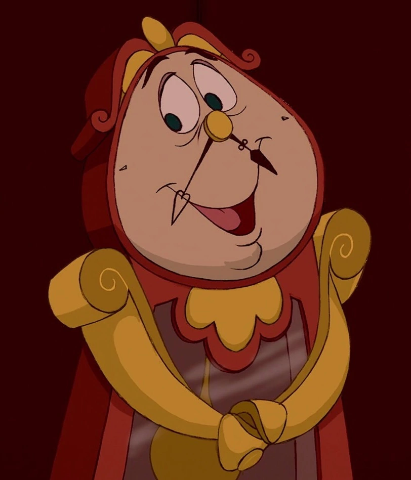

<!DOCTYPE html>
<html lang="en"></html>
<head>
    <meta charset="UTF-8">
    <meta http-quiv="X-UA-Compatible" content="ie=edge">
    <meta name="viewport" content="width=device-width, initial scale-1">
</head>

<title> Disney's beauty and the beast </title>

<link rel="stylesheet" href="beautyandbeast.style.css">

<header>
    <div class="header">
    <nav> 
        <p>Beauty and the Beast </p>
    </nav>
    </div>
</header>

<body>
    <main>
        <a href="https://www.youtube.com/watch?v=iurbZwxKFUE" button class="button"> Watch The Trailer </button> </a>
    </div>
    <h1>
        About The Movie
        <div class="img-one">
        
        </div>
    </h1>
    <p>A prince will remain a beast unless he experiences true love with someone else. 
        Beast is unhopeful until he meets Belle. Belle arrives at the castle in an attempt to rescue her dad but ends up having to stay there and take his place.
         From then on, Belle spends more time with the Beast and starts to learn more about him. The two begin to fall in love. 
         There are conflicts along the way, but their love may be strong enough to break the curse. </p>
    <section>
        <article>
        <h3> How I relate to Belle</h3>
         <P>  One of the ways I relate to Belle is through her love of reading. 
             In the beginning, we see Belle reading a book. Later in the movie, Belle is introduced to Beast's library. 
             She later finds out that Beast cannot read, so she teaches him. Like Belle, I enjoy libraries very much. 
             It would be my favorite room in the castle. Even though I have not taught people to read, I enjoy reading with others and discussing books.  </P>
         <P> Another way that I can relate to Belle is that she is a free thinker.
              It becomes clear to viewers that Belle is different from other people in the community.
               At least people treat her this way. Despite this, Belle continues with her daily activities and enjoys her life. 
               While I do not always follow this practice, I do my best to focus on my beliefs, which have sometimes reminded me of Belle.
        </P>
         <P>  The third way that I relate to Belle is her loyalty and friendship. Belle cares about those around her, which is what I try to do as well.
             From saving her dad from the castle to teaching the Beast how to read, it is clear that Belle wants the best for others. 
             I consider this inspirational and try to help people in my life out when they need it. </P> 
        </article>
    <div class="container1">
        <h3 class="center"> Additional Characters</h3>
    </div>   
 </section>
    </main>

    <figure class="hover-img">
        
        <figcaption>
          <h3> Lumiere enjoys singing and is best friends with cogsworth </h3>
        </figcaption>
      </figure>

    <figure class="hover-img1">
        
        <figcaption>
            <h3> mrs.potts spends her time looking after her son, chip</h3>
        </figcaption>
    </figure>
     
    <figure class="hover-img2">
        
        <figcaption>
            <h3> cogsworth is wise and enjoys spending time with lumiere </h3>
        </figcaption>

<footer>
    <div class="footer">
        <nav>
            <p> &copy 2022 </p>
        </nav>
    </div>
</footer>
</body>


